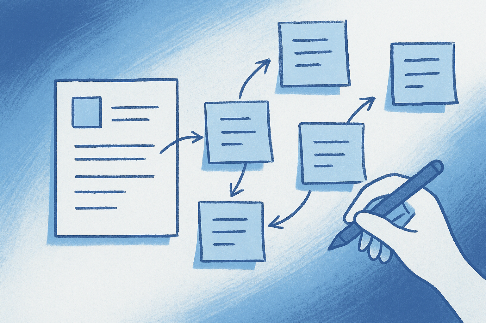
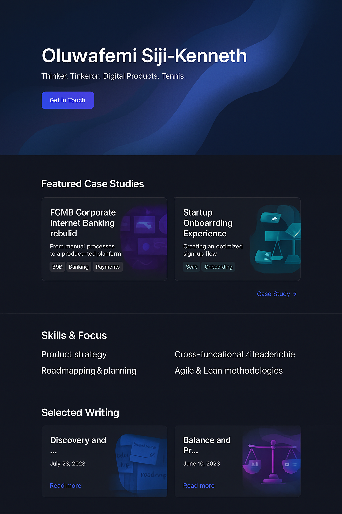

How I Approach Product Discovery
Frameworks and mindsets for understanding problems before building solutions.
Read postI enjoy reflecting on my craft and sharing what I’ve learned. These posts cover product discovery, strategy, and insights from the trenches.

Frameworks and mindsets for understanding problems before building solutions.
Read post
Thoughts on prioritising features and making trade‑offs that serve everyone.
Read post